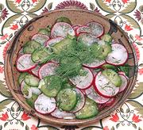

|
Cucumber, Radish & Dill SaladBaltic, Lithuania, Latvia, Estonia, Poland | ||||
| Makes: Effort: Sched: DoAhead: |
3 cups * 1-1/2 hrs Yes |
Salads of this type are used thorough the Baltic, Poland and Russia. It is lightly tart with some sharpness from black pepper. | |||
|
8 1 7 2 1/2 1/4 1/4 1 |
oz t oz T t t T |
Cucumbers (1) Salt Radishes Scallions Vinegar (2) Salt Pepper, black Dill |
Make - (1-1/4 hr -12 min work)
|